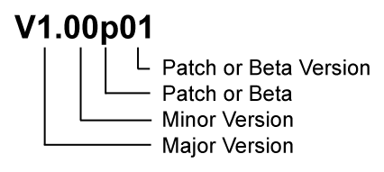

Release Notes
This is an overview of all bug fixes and new features of UMotion. The manual version always corresponds to the UMotion software version.
Version Number Definition
Version Number Definition
| Version Number | Description |
|---|---|
| Major Version | The major version is only incremented for a new generation with major changes. |
| Minor Version | The minor version is incremented every time a new feature was added or changed. |
| Patch or Beta | Determines if this is a patch ("p") or a beta ("b") version. Patch 0 is the initial version release and does not include the "p". |
| Patch or Beta Version | The patch release is incremented with every version that contains only bug fixes or changes to the manual. The patch number always starts with 1. The beta version is incremented with every change related to the current beta generation (includes bug fixes, new features or changes to the manual). Beta versions are watermarked as "beta" in the Clip Editor and are not available via the Asset Store. |
UMotion V1.21
New or Changed Features
- Changing the framerate of an animation clip doesn't automatically scale the keys/events anymore (this gives the user more flexibility/choices). Keys/events can be manually scaled using the box tool in the dopesheet view.
- When creating a new layer, the layer name text field is now automatically selected.
- A new button was added to the playback navigation that allows toggling the playback stop behavior (i.e. return frame cursor to start or keep current position).
- Changed default shortcut of "Focus Camera" to F (same is in Unity).
- When no UMotion project is loaded, an info message is now shown that indicates that a project can be opened via the "File" menu.
- The animation layers are now accessible via the UMotion API. This makes it easy to write a custom script that exports the same animation clip several times with different animation layers being active.
Bug Fixes
- Fixed that the shortcuts of the playback settings add their changes to the undo stack while pressing the corresponding UI button don't.
- Fixed that *.FBX export only works correctly when the base layer is selected.
- Fixed that assigning a GameObject to the Pose Editor while in prefab mode is not prevented.
Manual Changes
- Updated the "Clip Editor/Main Navigation/Clip Settings" chapter related to the changed framerate editing behavior.
- Updated the "Clip Editor/Playback Navigation" chapter based on the new button that has been added to the playback navigation area.
- Updated the "UMotion API" chapter based on the added functionalities.
UMotion V1.20p08
New or Changed Features
None
Bug Fixes
- Fixed that animation curves of a generic animation where the left tangent of the first key or the right tangent of the last key is set to "weighted" isn't played by Unity's animation system.
Manual Changes
None
UMotion V1.20p07
New or Changed Features
None
Bug Fixes
- Regression: Fixed that moving the frame cursor (green arrow) directly after playback stopped (due to reaching the end) doesn't update the pose of the character.
Manual Changes
None
UMotion V1.20p06
New or Changed Features
None
Bug Fixes
- Fixed that the "toggle IK Pinning" shortcut (I) isn't disabled in additive animation layers.
- Fixed that "Auto Key" and "IK Pinning" doesn't work after animation playback finished due to reaching the end (and not moving the frame cursor in the meantime).
- Fixed that undoing the creation of a rotation key in an additive layer causes the pose to be sampled incorrectly when switing back to the base layer.
- Fixed that restarting UMotion while any script in the current Unity project has a syntax/compilation error keeps the "Reloading Assemblies" dialog opened.
- Fixed that sometimes an error message "Unable to resolve reference " is displayed when importing UMotion for the first time (or in some cases when starting Unity).
Manual Changes
None
UMotion V1.20p05
New or Changed Features
None
Bug Fixes
- Fixed that curve of the CustomPropertyConstraint in "Animator Paramameter" mode isn't exported with normalized frame times when exporting as *.FBX.
Manual Changes
None
UMotion V1.20p04
New or Changed Features
None
Bug Fixes
- Fixed that the CustomPropertyConstraint doesn't preview animated material properties.
- Fixed that when the CustomPropertyConstraint animates the "GameObject.SetActive" property it doesn't reset it to it's default value when switching to Config Mode.
Manual Changes
None
UMotion V1.20p03
New or Changed Features
None
Bug Fixes
- Regression: Fixed an exception that is thrown when opening a custom Unity editor layout that contains UMotion windows.
- Fixed that UMotion automatically saves all files to disk (and not letting Unity decide when to write changes to disk). This works around a Unity bug that freezes Untiy on Mac OS and Linux when the Unity preferences setting "Verify Save Assets" is enabled and UMotion is opened.
- Fixed that FBX exporter exports animated properties even if they are disabled (Config Mode) or have no key frames.
- Regression: Fixed that when selecting multiple keys in the Dopesheet they get immediately deselected if the property (e.g. rotation) of the last selected key is not enabled on the bone/transform of the first selected key.
- Regression: Fixed that an animated property stays selected when it is disabled.
- Regression: Fixed that selected properties/keys in the Clip Editor are deselected when any other UI control (e.g. button, text box,...) is clicked.
Manual Changes
None
UMotion V1.20p02
New or Changed Features
None
Bug Fixes
- Regression: Fixed an exception that is thrown when using a tool assistant window while pivot is set to "global".
- Fixed that keypad enter can't be used to confirm changes of input fields.
- Fixed that typing a value into a tool assistant window and selecting a different bone applied the changed value to that bone.
Manual Changes
None
UMotion V1.20p01
New or Changed Features
None
Bug Fixes
- Regression: Fixed that bones/transforms get deselected whenever a key is created (either manually or via "Auto Key").
- Fixed an endless loop when a GameObject is assigned to the Pose Editor that doesn't contain all bones/transforms defined in the UMotion project.
- Fixed that transforms with spherical shape had a box shaped collider.
- Fixed that bone/transform colliders aren't at the correct position when using UMotion in (paused) play mode.
- Fixed that frame cursor doesn't return to the start position after playback stopped.
- Fixed that minimizing the maximized Clip Editor closed the current UMotion project.
Manual Changes
None
UMotion V1.20
New or Changed Features
- Selecting keys in the dopesheet now automatically selects the related animated property and the related bone/transform.
- Copy & paste reworked: It's now possible to copy & paste between compatible animated properties.
- Key context menu entry "Select in Scene View" renamed to "Select and Set Frame Cursor".
- New minimum requirement for UMotion is Unity 2017.4 (or higher).
- UMotion now uses assembly definition files for all *.cs files. If desired, UMotion can thus now be placed inside a "Plugins" folder.
- Channels that are not allowed to contain keys in an additive layer are now greyed out in the Animated Properties List.
- UMotion isn't installed to the "Editor Default Resources" folder anymore.
Bug Fixes
- Fixed that the Child-Of constraint doesn't correctly calculate the position/rotation when the animated character is scaled.
- Fixed that "select all" in curves view selectes also keys of curves that are hidden (via the eye symbol in the animated properties list).
- Fixed that hiding a curve in curves view via the eye symbol in the animated properties list, doesn't deselect selected keys of that curve.
- Fixed that the tool assistant window isn't correctly displayed in the scene view when "Aura 2" asset is installed in the Unity project.
- Fixed that the move tool doesn't allow moving the hips and the IK pinned legs simultaneously.
- Fixed that the label in the animation event function search window was truncated.
- Fixed that it was possible to add keys to channels that are not allowed to contain keys in an additive layer (e.g. the Child-Of Parent channel).
Manual Changes
- Updated "Dopesheet / Curves View" chapter based on the changed context entry menu.
- Changed minimum required Unity version to 2017.4 on first page of manual.
- Removed known issues that are related to Unity versions older than 2017.4.
- Updated the UMotion folder description in the "Getting Started" chapter.
UMotion V1.19p03
New or Changed Features
None
Bug Fixes
- Fixed that custom joints/transforms (like the IK handles) are displayed with the wrong size if a Unity UI canvas is within the GameObject's hierarchy.
- Fixed that right-click on key then clicking on "Left Tangent --> Constant" automatically sets the right tangent to constant, too. The expected behavior would be that the right tangent is set to "free" instead.
- Fixed an error message that is shown when the "Sync" button is clicked when the "Unity Recorder" package is installed in Unity 2018.4.
- Fixed that quaternion rotation curves of generic animation clips aren't exported correctly if the last scale curve in the animation has no key.
Manual Changes
None
UMotion V1.19p02
New or Changed Features
None
Bug Fixes
- Fixed that in some cases animated characters got invisible in the scene view.
- Fixed an exception that is thrown when UMotion is installed without the UMotion manual.
Manual Changes
None
UMotion V1.19p01
New or Changed Features
- Experimental: Setting to instruct UMotion to directly create root motion curves for humanoid *.anim files.
Bug Fixes
- Fixed that control is used instead of command for shortcuts and various other actions (like multi-selecting) on Mac.
- Fixed that the delete shortcut doesn't work on Mac.
- Fixed the naming of the shortcut modifiers in the preferences window on Mac.
- Fixed that sometimes the dopesheet is zoomed while the animated properties list is scrolled via the touchpad on Mac.
Manual Changes
- Added descriptions of the new root motion settings in the "Clip Settings" chapter.
UMotion V1.19
New or Changed Features
- All input fields now support mathematical expressions (e.g. "5+4").
- The position/rotation/scale properties of generic bones can now be enabled/disabled in config mode. This is useuful for reducing the number of animated properties displayed in the Clip Editor.
- The IK Setup Wizard now automatically hides the scale properties of the IK Handle and the IK Pole Handle.
Bug Fixes
- Fixed that the keys of the IK pole rotation property contribute to the total clip length even though the pole rotation property isn't used (because a pole target is used instead).
- Fixed that the playback end cursor (white arrow) was reset to the clip end when switching clips.
- Fixed an exception that is thrown when exporting an animation with a custom component property where the related component is missing.
Manual Changes
- Fixed a typo in the "UMotion API" chapter.
- Added a description of the new "Properties" setting to the "Pose Editor/Config Mode/Configuration" chapter.
UMotion V1.18p01
New or Changed Features
None
Bug Fixes
- Fixed an exception that is thrown when copying an euler rotation key to a quaternion rotation property or the other way around.
- Fixed an exception that is thrown when importing a umotion project that contains animation layers into another umotion project.
- Fixed an exception that is thrown when importing an animation clip and a custom property constraint is used.
- Added a workaround for a Unity GUI bug that causes an exception under specific circumstances when the rotation tool assistant window is shown.
- UMotion now ignores an exception that is thrown by 3rd party code when UMotion changes the Unity editor's playmode.
Manual Changes
None
UMotion V1.18
New or Changed Features
- All scriptable render pipelines (LWRP, HDRP, custom SRP) are now officially supported.
- Added an official UMotion scripting API.
- Improved the behaviour when copying & pasting rotation keys from one clip to the other when the clips use different rotation modes.
Bug Fixes
- Fixed an incompatibility issue with Bolt 2.0.
- Fixed an exception that is thrown when a GameObject with bones/transforms that contains slashes in their names has been added to the Pose Editor.
- Fixed that an inactive GameObject that is assigned to the Pose Editor is deleted.
- Fixed that exporting an FBX fails if the animated GameObject's root has one direct child with the exact same name as the root.
Manual Changes
- Added the "UMotion API" chapter.
UMotion V1.17p06
New or Changed Features
None
Bug Fixes
- Fixed that enabling IK Pinning rotated the IK target in a wrong way in case the character's root is rotated.
- Fixed that the global move tool assistant doesn't work correctly when moving a transform that is controlled by a Child-Of constraint.
Manual Changes
None
UMotion V1.17p05
New or Changed Features
None
Bug Fixes
- Reverted the fix applied in V1.17p04 regarding the offset of the "UMotion Lock" hierarchy label as the problem has been fixed in Unity 2019.1.1f1 and higher.
- Fixed that applying a GameObject to the Pose Editor causes the whole screen to get black when HDRP is used. Rendering will still appear darker then it should, this is caused by a Unity bug and has been reported to Unity.
Manual Changes
None
UMotion V1.17p04
New or Changed Features
None
Bug Fixes
- Fixed an exception that is thrown when a GameObject is assigned to the Pose Editor in Unity 2019.1 when HDRP is used.
- Fixed that when using the rect selection to select a master key, read-only key are also selected.
- Fixed that pressing "Space" in the Clip Editor in Unity 2019.1 opened the Clip selection popup instead of exectuing the shortcut assigned to "Space".
- Fixed that the "UMotion Lock" hierarchy label has an offset in Unity 2019.1.
Manual Changes
None
UMotion V1.17p03
New or Changed Features
None
Bug Fixes
- Fixed rig rendering when HDRP/LWRP are used.
- Fixed an error message that is shown when clicking the clear button in the Pose Editor when HDRP is used.
- Fixed an exception that is thrown under specific circumstances when a GameObject is applied to the Pose Editor.
- Catched an exception that is thrown under specific circumstances when clicking the "Sync" button and replaced it with an error message.
Manual Changes
- Added "IK pinned hand/foot jitter's in the exported animation" to the "Exporting Animations FAQ".
- Added the video "Episode 3: Customizing an animation for a RPG" to the "Video Tutorials" chapter.
- Added the video "Episode 4: Unity Timeline & Weighted Tangents" to the "Video Tutorials" chapter.
UMotion V1.17p02
New or Changed Features
None
Bug Fixes
- Fixed a regression (introduced in V1.16p03) that caused scaled GameObjects to offset their position when they are applied to the Pose Editor.
Manual Changes
None
UMotion V1.17p01
New or Changed Features
None
Bug Fixes
- Fixed that rotation continuity wasn't always ensured when exporting an animation clip as humanoid *.anim.
- Exceptions that are thrown by any non UMotion script in the OnProjectChanged() callback while UMotion imports an animation are ignored now.
- Fixed an exception that is thrown when a component property that is animated in the current UMotion project is removed from the component's script.
- Exceptions that are thrown by any non UMotion script in the OnDisabled() callback when UMotion is removing a GameObject from the Pose Editor are ignored now.
- Fixed an exception that is thrown when an animation clip is imported that contains a humanoid property with no key frames.
- Fixed that the curve editor's context menu item "Edit Key" could be clicked (and thus lead to an exception) when an event was selected but no key.
- Fixed that data that is re-created by undo/redo still has it's old event listeners registered.
- Ignores exceptions that are thrown by other scripts when AssetImporter.SaveAndReimport() is called when importing animations into UMotion.
Manual Changes
None
UMotion V1.17
New or Changed Features
- Clearing a GameObject from the Pose Editor but keeping the current pose in scene is now possible by clicking the dropdown arrow next to the "Clear" button.
- Reworked the GameObject locking mechanism ("UMotion Lock") to better incoperate with Unity's new prefab workflow (introduced in Unity 2018.3).
- When syncing UMotion with Unity Timeline, the animated GameObject isn't temporarly removed from Unity Timeline anymore.
- It is not possible to create a prefab of a GameObject that is locked by UMotion anymore.
Bug Fixes
- Fixed an exception that is thrown when a GameObject that is a child in new prefab (Unity 2018.3 or above) is applied to the Pose Editor.
- Fixed an exception that is thrown when Unity is started and the project contains a prefab with a UMotionLock component.
- Fixed that the FBX exporter doesn't export the clip settings correctly (e.g. loop, start frame, end frame,...).
- Fixed that modal windows aren't automatically closed when the parent window is closed.
- Fixed an exception that is thrown when clicking on the File menu (Clip Editor) and there are backup files with an invalid name in the backup directory.
Manual Changes
- "Unity Timeline Integration" chapter: Updated text to indicate that GameObjects aren't removed from Timeline anymore.
- Updated the "Pose Editor" chapter based on the latest implementation changes.
UMotion V1.16p03
New or Changed Features
None
Bug Fixes
- Fixed that when an *.FBX file is exported again by UMotion the Animator Controller looses the reference to animation clips contained in that *.FBX file.
- Fixed a regression (introduced in V1.16p02) causing IK on generic bones to not beeing exported to *.anim correctly.
- Fixed that UMotion's animation preview doesn't preview the root position of a generic animation correctly if the root transform is scaled.
- Fixed that the interpolation of rotation curves of generic animations is slightly different when exported to *.anim (than in UMotion).
- Fixed that euler/quaternion continuity for generic bones that used multiple layers or constraints wasn't ensured when exported to *.anim.
- Fixed wrong method name in GUICompatibilityUtility.cs.
- Fixed an exception that is thrown when a corrupted humanoid character is applied to the pose editor.
Manual Changes
None
UMotion V1.16p02
New or Changed Features
None
Bug Fixes
- Fixed that rotation curves of a generic animation aren't exported correctly to *.anim when an IK constraint is applied to a sibling or a parent in the hierarchy.
- Fixed an exception when clicking on "OK" in the "Add Mirror Mapping" dialog when the "Mirror Mapping" dialog has already been closed.
Manual Changes
None
UMotion V1.16p01
New or Changed Features
None
Bug Fixes
- Fixed compile errors in Unity 2019.1 when the Unity Timeline package isn't installed.
- A broken animation clip can now be detected and automatically deleted to prevent exceptions caused by that clip.
- The animation export now skips animation clips that are faulty instead of generating unhandled exceptions.
- Fixed that the *.FBX exporter on Mac OS exports wrong values for rotation curves under some circumstances.
- Fixed that auto key ("generate") creates keys when keys are dragged in the Dopesheet.
- Changed all materials in the example scene to use an "Unlit" shader so that they are displayed correctly across each render pipeline.
Manual Changes
None
UMotion V1.16
New or Changed Features
- Line numbers are now displayed in exception stack traces.
- Added a warning messages to the animation importer when a bone/transform that is animated in the imported animation is locked in the UMotion project. Furthermore a dialog appears that asks if the locked bones/transforms should be automatically re-configured to show the animation.
- Improved the text that is displayed in the "Channels" section of the Pose Editor when a locked bone/transform is selected.
- Added helping links to the export settings and the export log window that refer to the "Exporting Animations FAQ".
- Added a warning dialog when a GameObject is assigned to the Pose Editor for the first time and bones/transforms have duplicate names.
- Added an error message when exporting *.fbx animations and duplicate names are found in bones/transforms.
- Added a "Tip" to the clip import dialog regarding humanoid animator IK.
Bug Fixes
- Fixed that UMotion windows are closed everytime Unity is opened (happens only in HDRP projects).
- Fixed that a script with an obfuscated name is shown in the "Add Component" menu.
- Fixed that the description in the "Key Dialog" window is cut off.
- Fixed that UMotion thinks it crashed if a 3rd party script throws an exception in "MonoBehaviour.OnValidate()".
- Fixed that some special operations (e.g. deleting only a single key and then closing the project) don't set the umotion project dirty thus are not stored.
Manual Changes
- Added a new chapter "Exporting Animations FAQ". Helps troubleshooting issues related to exporting animations.
UMotion V1.15p04
New or Changed Features
None
Bug Fixes
- Fixed that the camera isn't rendered correctly when a character is applied to the pose editor due to HD render pipeline's fog.
- Fixed that it's not possible to assign a shortcut to "Frame View" (Curves).
- Fixed a crash when trying to create a "Custom IK" chain with the IK Setup Wizard when the target bone is locked.
Manual Changes
None
UMotion V1.15p03
New or Changed Features
None
Bug Fixes
- Fixed wrong text rendering in all UMotion windows when UMotion is used together with Unity's new editor skin.
- Fixed an exception that is thrown when the IK handel's parent is set to be the IK target and the operation is undone and then redone.
- Fixed a compile error when using UMotion in Unity 2019.1.
Manual Changes
None
UMotion V1.15p02
New or Changed Features
None
Bug Fixes
- Fixed that continuity was not ensured for quaternion curves of exported *.anim files.
- Fixed a crash that appears when the curves view is opened, selection syncing between Pose and Clip Editor is enabled and the opened animation clip is deleted.
- Fixed a crash that can appear on Linux/Mac OS under certain circumstances when UMotion is opened/reloaded after an assembly reload.
- Fixed a crash that appears under certain circumstances when pressing the "Cleanup" button in Config Mode and selection syncing is enabled.
Manual Changes
None
UMotion V1.15p01
New or Changed Features
None
Bug Fixes
- Fixed an exception that is thrown when having multiple keys selected in the Curves View, editing their value via the "Edit Keys" context menu and then scaling the keys via the rect tool before the "Edit Keys" dialog is closed.
- Fixed an exception that is thrown when right clicking in the Curves View when no animated property is selected.
- Fixed that UMotion accidentally thinks that it crashed when other assets throw an exception in OnWillSaveAssets() while UMotion is restoring the animation compression setting while importing an animation clip.
- Fixed that when the synchronized selection is enabled, the curve view displays a curve even though no animated property is selected anymore.
Manual Changes
None
UMotion V1.15
New or Changed Features
- Added a new button "↔ Clip Editor" to the Selection section in the Pose Editor. When enabled, the selection of the Pose Editor and of the Clip Editor is synchronized. This mode is enabled by default.
- Added a new menu item "Select Property Keys in Clip Editor" to the context menu of the Channels section in the Pose Editor.
- Added a new menu item "Select All keys" to the contex menu of the Animated Properties List.
- Selecting a property in the Animated Properties List in the Clip Editor, doesn't select all keys of that property anymore.
- Generic animation clips exported as *.anim now show the root motion settings in the Inspector.
- Vertex weight visualization has been removed due to incompatibility with newer Unity versions.
- Added a "duplicate clip" button to the Clip Editor.
- Decreased the space required by the Playback Navigation bar in order to ensure that all buttons are visible even on small screens.
- Added a "Select In Scene" menu item to the Dopesheet/Curves View context menu. Can also be triggered by holding alt while selecting a key.
- Added a context menu to the time ruler. Can be used to set the playback start/end frame.
- Added a "Crop" feature that allows cropping whole animation clips. The start/end frame is defined by the playback start/end frame. The feature can be reached via "Edit / Crop to Playback" or via the context menu in the Dopesheet/Curves View.
- Added a "Reverse" feature that allows reversing selected keys of an animation clip. The feature can be reached via "Edit / Reverse" or via the context menu in the Dopesheet/Curves View.
Bug Fixes
- Fixed that the last selected clip name is displayed in the popup button of the Clip Editor even if the project is already closed.
- Fixed that the tangent mode of keys of generic animation clips wasn't exported correctly in Unity 5.5 and Unity 5.6.
- Fixed that the rect tool handles aren't calculated correctly when child-of keys are selected.
- Fixed that reversing the child-of constraint via the rect tool isn't reversing the constant interpolated curve correctly.
- Fixed that when an IK driven bone is selected in the IK rig layer, tools manipulated the corresponding FK bone. The tool should do nothing instead.
Manual Changes
- Added a description of the new button in the Selection chapter of the Pose Editor.
- Updated the description of the context menu in the Channels chapter.
- Updated the description of the context menu in the Animated Properties List chapter.
- Removed the descriptions related to the vertex weight visualization from the "Pose Editor -> Options" and "Pose Editor -> Display" chapters.
- Added a description of the new "duplicate clip" button to the "Clip Editor -> Main Navigation" chapter.
- Updated the screenshots in the "Clip Editor" and "Clip Editor -> Playback Navigation" chapters.
- Added descriptions for the new menu items in the "Clip Editor -> Menu Bar -> Edit" chapter.
- Added descriptions for the new menu items in the "Clip Editor -> Dopesheet / Curves View" chapter.
UMotion V1.14p01
New or Changed Features
None
Bug Fixes
- Fixed that white boxes randomly appeared on some PCs as soon a character is assigned to the Pose Editor.
- Fixed that the text in the Shortcut Binding Dialog has no word wrap.
- Fixed that euler continuity wasn't ensured when using "Copy To Other Side" in combination with "Auto Key".
- Fixed that transforms that don't exist in an *.FBX file that is updated by the exporter cause an error message even if their visibility is set to "Locked" in UMotion.
- Fixed a compile error in Untiy 2018.3 and added support for the new "ApplySceneOffsets" mode in Unity Timeline's animation tracks.
- Fixed that the FBX exporter exported events on the wrong frame position.
Manual Changes
None
UMotion V1.14
New or Changed Features
- The Auto/Clamped Auto tangent mode has been reworked. In case the clip is looped, it now calculates the tangents of the first and last key in such a way that they interpolate seamlessly.
- Improved the wording of the \"This clip is not compatible with this project.\" error message shown when importing a generic animation that uses an incompatible rig.
Bug Fixes
- Fixed a crash that appears when importing a clip from a umotion project with a child-of curve that has no parent selected into an existing umotion project.
- Fixed a GUI related crash that can appear under very specific circumstances.
- Fixed a crash in Unity 2018.2 when synchronized with Unity Timeline and playback is stopped.
- Fixed that *.anim export always exported clips at 60 fps in Unity 2018.2.
Manual Changes
- Updated the "Playback Navigation", "Clip Settings" and "Dopesheet / Curves View" chapters based on the changes of the Auto/Clamped Auto tangent mode.
UMotion V1.13p02
New or Changed Features
None
Bug Fixes
- Fixed that the text in the "Calibrate Character Front" (IK Setup Wizard) window was truncated.
- Fixed an exception that is thrown when exporting an animation clip that has invalid characters in it's name.
- Fixed an exception that is thrown when the FBX SDK dll wasn't updated correctly when installing a UMotion update.
- Fixed an exception that is thrown under very specific circumstances when clearing the animated GameObject from the Pose Editor.
- Implemented a workaround for the "TypeLoadExcpetion" that is thrown every time when Unity 2018.2 is opened.
- Implemented a workaround for the GUI textures beeing randomly unloaded by Unity 2018.2.
- Fixed an exception that appears under specific circumstances when enabling vertex weight rendering.
- Fixed an exception that is thrown when "Cleanup" is pressed and IK chain members are thus removed.
Manual Changes
None
UMotion V1.13p01
New or Changed Features
None
Bug Fixes
- Fixed GUID conflicts.
Manual Changes
None
UMotion V1.13
New or Changed Features
- The *.fbx file scale can now be defined in the export settings.
- Export to FBX is now also supported on Mac OSX.
- The dopesheet context menu now also displays the "Add keys To All Properties" item when a master key or an animation event was clicked.
- The context menu that is used to switch between animation clips is now sorted alphabetically.
Bug Fixes
- Fixed an exception that is thrown when the About Dialog is opened.
- Fixed an exception that is thrown when exporting a *.fbx animation and the defined export directory does not exist.
- Fixed that the total *.fbx file grows with each export when updating an existing *.fbx file.
- Fixed that the framerate isn't correctly exported when exporting as *.fbx.
- Fixed that root motion isn't previewed correctly when the animated character is scaled.
- Fixed an exception that can occur under specific circumstances when clicking on the "Calibrate Character Front" button in the IK setup wizard.
- Fixed an exception that can occur under specific circumstances when creating a humanoid IK rig using the IK setup wizard.
- Fixed an exception that is thrown when exporting a clip that has a custom property in "component property" mode with no GameObject assigned.
- Fixed an exception that is thrown when pressing CTRL + D while dragging keys in the Clip Editor.
Manual Changes
- Added a description of the "File Scale" property in the "Clip Editor / Main Navigation / Project Settings" chapter.
- Updated the "Import/Export" chapter based on the latest changes.
UMotion V1.12p03
New or Changed Features
None
Bug Fixes
- Fixed an exception that is thrown when opening a umotion project that has keys at frames below 0.
- Installed a workaround for a bug in Unity 2018.2 that causes most GUI labels to be displayed incorrectly.
- Installed a workaround for a bug in Unity 2018.2 that causes the colliders of the bones not to update.
- Fixed a few exceptions that are thrown under very specific circumstances by the GUI system.
Manual Changes
None
UMotion V1.12p02
New or Changed Features
None
Bug Fixes
- Fixed that when the Child-Of Parent (or IK Pinning) property is changed, existing keys are not updated correctly.
- Fixed an exception that is thrown in various scenarios when using a Child-Of (IK Pinning) constraint.
- Fixed an exception that is thrown in some specific scenarios when creating keys via the key selected dialog.
- Fixed an exception that can occur on Mac OS when the Clip Editor window is opened.
- Fixed an exception that can be thrown under specific circumstances when a project is closed.
- Fixed an exception that can be thrown under specific circumstances when a project is imported.
Manual Changes
None
UMotion V1.12p01
New or Changed Features
None
Bug Fixes
- Fixed an exception that is thrown when deleting two animation clips in sequence while the curves view is visible.
- Fixed an exception that is thrown when undoing the creation of a new project (when another project was previously opened).
- Undoing/redoing switching between UMotion projects is not supported anymore as there a various cornern cases that can cause exceptions.
Manual Changes
- Added a video tutorial chapter for tutorials created by the Youtuber "Jayanam".
UMotion V1.12
New or Changed Features
- The core architecture was reworked in order to gain major performance improvements (especially when editing large animation clips).
- Support for Unity 5.4 is deprecated. Please use Unity 5.5 or higher or keep using UMotion V1.11p02.
- The "<unity-project>/UMotionAutoBackups" folder was moved to "<unity-project>/UMotionData/AutoBackups".
Bug Fixes
- Fixed an exceptions that is thrown on Mac OS when a UMotion dialog window is opened.
- Fixed that "File Format Changed" dialog is not shown when UMotion automatically openes the last used project.
- Fixed that "File Format Changed" dialog is not shown when opening a project via the "Recently Opened Projects" menu item.
- Fixed error messages that appear in the Unity Console regarding an invalid scale being assigned.
- Fixed an endless loop when opening the curves view when the whole animation only has keys at the first frame.
Manual Changes
- Removed the description of known issue related to Unity versions that aren't supported anymore.
UMotion V1.11p02
New or Changed Features
None
Bug Fixes
- Fixed that all tangents instead of only the selected ones are inverted when applying a negative scale with the box tool.
- Fixed that free tangents aren't inverted correctly by the box tool.
- Fixed an exception that is thrown clicking on an animated property using ALT + Left Mouse Button and no GameObject is assigned to the Pose Editor.
- Fixed an exception that is thrown when a GameObject that is currently locked by UMotion is duplicated (by duplicating a parent transform of it) as soon as "Clear" is pressed in the Pose Editor.
- Fixed a potential exception that can occure when dragging keys over existing keys.
- Fixed an exception that is thrown when exporting in "Update existing FBX mode" and the FBX file that should be updated has been deleted.
- Fixed an exception that is thrown when exporting an animation clip and a constraint dependency loop is detected.
- Fixed various exceptions that appear when bones in an IK chain do not exist in the current animated GameObject.
Manual Changes
None
UMotion V1.11p01
New or Changed Features
- The "Quick Start Tutorial" is now shown in the welcome screen.
Bug Fixes
- Fixed that tangent properties aren't inverted when keys are inverted using the box tool.
- Ignoring an exception that is caused by a Unity bug in 2018.2.0 when AssetDatabase.Refresh() is called.
- Fixed a null reference exception that appears under specific circumstances when editing an animation clip of a Unity Timeline sequence.
- Fixed a null reference exception that appears under specific circumstances when using the IK Setup Wizard.
- Fixed that the rotation tool assistant window width is too small in some specific situtations.
- Fixed that the clip name of an animation clip that is exported for the first time isn't displayed in the title of the export progress bar dialog.
Manual Changes
- Added a "Quick Start Tutorial" to the Video Tutorials chapter.
UMotion V1.11
New or Changed Features
- Added FBX export functionality.
- Added export settings to the project settings window. The export settings can also be reached via "File / Export / Export Settings".
- Added Autodesk® FBX® copyright notice to "About" window.
- Reduced the time consumed for exporting a humanoid animation that uses IK by 50%.
- The export process now displays progress bars.
- The "Unapplied Modifications" dialog displayed when switching from Config Mode to Pose Mode now offers an option to directly save the referenc pose.
- Improved the Curves View: Curves now correctly preview how they behave after the clips last frame (loop, root motion).
- Added box editing tool to the Clip Editor: Provides easy scaling of keys and events.
- Added "ripple" mode when dragging or scaling keys/events (activated by holding R).
- Improved the Rotation Tool Assistant.
Bug Fixes
- Fixed an exception that is thrown when pressing the "Focus Camera" shortcut in some specific scenarios.
- Fixed an exception that is thrown when all IK chain members are masked and the IK target's visibility is set to "locked".
- Fixed an exception that is thrown in Pose Mode when all IK chain members of an IK constraint are masked.
Manual Changes
- Added Autodesk® FBX® copyright notice to "Credits" chapter.
- Added Eigen copyright notice to "Credits" chapter.
- Updated "Clip Editor / Main Navigation / Project Settings" chapter based on latest implementation changes.
- Updated "Clip Editor / Import/Export" chapter based on latest implementation changes.
- Updated "Pose Editor / Tool Assistant" chapter based on latest implementation changes.
UMotion V1.10p04
New or Changed Features
None
Bug Fixes
- Fixed an exception that is thrown when importing an *.anim file that has key frames with invalid tangent modes.
- Fixed an exception that is thrown under very specific conditions when assigning a humanoid GameObject to the Pose Editor.
- Fixed an exception that is thrown under very specific conditions when pressing Tab (= switch edit mode shortcut) when no preview object is selected in the Pose Editor.
- Improved exception handling so that other assets that throw exceptions in events like OnProjectChange() don't break UMotion's functionality.
- Fixed exceptions that are thrown when AssetDatabase methods issue a nested OnGUI call.
Manual Changes
None
UMotion V1.10p03
New or Changed Features
None
Bug Fixes
- Fixed an exception that is thrown when clicking on "Window --> UMotion Editor --> Manual" when the Clip Editor is not opened.
- Fixed an exception that is thrown when clicking on "Window --> UMotion Editor --> Video Tutorials" when the Clip Editor is not opened.
- Fixed an exception that is thrown by the rotation tool assistant under very specific circumstances.
- Fixed an exception that is thrown when undo is performed after the UMotion project file was deleted.
- Fixed that UMotion windows are closed when restarting UMotion (regression V1.10p02).
- Fixed an exception that is thrown undoing the deletion of a Custom Property constraint, changing the mode then delete the Custom Property constraint again.
- Fixed that undoing the deletion of a Custom Property Constraint, the error dialog "Empty name not allowed" is displayed every time the mode is changed.
- Fixed an exception that is thrown when vertex weight visualization is enabled on meshes that have no boneWeights defined.
Manual Changes
None
UMotion V1.10p02
New or Changed Features
None
Bug Fixes
- Fixed an exception that is thrown under very specific circumstances when pasting in the Clip Editor.
- Fixed a "ReflectionTypeLoadException" that is thrown under specific circumstances.
- Fixed compatibility with Unity Timeline in Unity 2018.2 (beta).
- Fixed an exception that is thrown under very specific circumstances when opening the Clip Editor for the first time.
- Added a error message box instead of some undefined behaviour when assigning a child or a parent GameObject of the GameObject already locked by UMotion to the Pose Editor.
- Fixed an exception that is thrown when assigning a GameObject with HideFlags.DontSave set.
- Fixed an exception that is thrown when deleting the UMotion installation while a UMotion project (that is also deleted) is loaded in the Clip Editor.
- Fixed an exception that is thrown when vertex weight visualization is enabled on a GameObject that has a SkinnedMeshRenderer with no bones.
- Fixed an exception that is thrown by the IK Setup Wizard when a bone is selected as target that doesn't exist in the current animated GameObject.
Manual Changes
None
UMotion V1.10p01
New or Changed Features
None
Bug Fixes
- Fixed that the legacy GameObject "UMotion_EditorStatesSceneHelper" is only removed when UMotion is instantiated but not when a scene is opened.
Manual Changes
None
UMotion V1.10
New or Changed Features
- Added a backup system that automatically creates backups of the opened UMotion project (enabled by default).
- The "Channels" section in the Pose Editor is now resizeable.
- Added a search box to the "Channels" section of the Pose Editor.
- Implemented an update/general notification system.
- Added tooltips to settings shown in the preferences window.
Bug Fixes
- Fixed various GUI layout exceptions when running in the Linux editor.
- Fixed an exception when clicking on "Focus Camera" when no SceneView window exists in the current editor layout.
- Fixed that "Focus Camera" doesn't make the SceneView window visible when hidden by another window.
Manual Changes
- Updated "Clip Editor / Preferences" chapter based on latest implementation changes.
- Updated "Pose Editor / Pose Mode / Channels" chapter based on latest implementation changes.
- Updated "Clip Editor / Menu Bar / File" chapter based on latest implementation changes.
UMotion V1.09p05
New or Changed Features
None
Bug Fixes
- Fixed some Unity GUI Layout exceptions randomly appearing on Mac OS.
Manual Changes
None
UMotion V1.09p04
New or Changed Features
None
Bug Fixes
- Fixed various exceptions that are thrown when modifying keys via shortcuts (e.g. delete, paste,...) while they are dragged in the Clip Editor.
- Fixed an exception that is thrown when pasting a key of a property that doesn't exist in the current project.
- Fixed that dragging keys/events isn't stopped even though the window isn't focused anymore.
- Fixed that auto key buttons aren't correctly placed in the UI layout.
Manual Changes
None
UMotion V1.09p03
New or Changed Features
None
Bug Fixes
- Fixed that animations aren't imported completely "lossless" (even though the key frame reduction is set to "lossless") resulting in some noticeable jitter.
- Fixed an exception that is thrown when manipulating the transform hierarchy of a GameObject currently locked by UMotion.
- Fixed that the "Reference Pose" text overflows the tab UI element (in the Config Mode panel).
- Fixed that the "Properties" tab was slightly bigger than the other tabs (in the Config Mode panel).
- Fixed an exception that is thrown when exporting humanoid animation clips (regression V1.09p02).
Manual Changes
None
UMotion V1.09p02
New or Changed Features
None
Bug Fixes
- Fixed an exception that is thrown when importing a generic animation in Unity 2017.1 or higher.
- Fixed that exported euler rotations of generic animation clips differ from the euler curve created in UMotion.
Manual Changes
None
UMotion V1.09p01
New or Changed Features
None
Bug Fixes
- Fixed an exception that is thrown when assigning a GameObject to the Pose Editor in play mode.
- Fixed that broken tangents don't work in Unity 5.5 and 5.6.
Manual Changes
None
UMotion V1.09
New or Changed Features
- Added additional menu items to the "Window/UMotion Editor" menu: "Manual", "Video Tutorials" and "Contact Support".
- Extending UMotion Pro's functionality is now possible via the callback system. This allows using e.g. FinalIK inside UMotion or writing new constraints (e.g. a "Look-At" constraint).
Bug Fixes
- Enabled the workaround for Known Issue 07 in Unity 2017.4.
- Fixed that no error message is prompted when a name used for a custom IK target or custom IK pole target (in the IK Setup Wizard) is already taken by a humanoid bone.
- Fixed that the warning message "Tiled GPU perf. warning: RenderTexture color surface was not cleared/discarded" is shown when Graphics Emulation is set to "OpenGL ES 2.0" and a GameObject is applied to the Pose Editor.
- Fixed that the warning message "The referenced script on this Behaviour is missing" is shown everytime Play Mode is started after UMotion has been uninstalled.
- Fixed that the "Reference Mode" popup button in the IK Setup Wizard was thicker than the "Target Rotation" popup button.
- Fixed that starting Play Mode in Unity 2018.1 caused an exception when a UMotion window was opened.
Manual Changes
- Added "Extending UMotion" to the "Options" chapter.
- Added an entry to the FAQ.
UMotion V1.08p02
New or Changed Features
None
Bug Fixes
- Fixed an exception that is thrown in Unity 2018.1b12 when Unity Timeline is previewing an animation on the same GameObject as being used by UMotion.
Manual Changes
None
UMotion V1.08p01
New or Changed Features
None
Bug Fixes
- Transforms added in Unity or custom joints/transforms added in UMotion that have the same name like a transform mapped as humanoid bone caused an unhandled exception when exporting an animation or applying the GameObject to the Pose Editor. Added additional error checks so that this situation doesn't occur anymore.
- Fixed that bones are displayed with a wrong rotation if the animated GameObject has a rotated parent transform.
- The "Resources" folder was renamed to "InternalResource" to avoid that the assets inside this folder are added to the built game when UMotion isn't installed in the "Editor Default Resources" folder. A clean install is required for this change to take effect.
- Added an error message that is shown instead of an exception when UMotion script files are compiled into the wrong assembly. This happens for example when UMotion is placed inside a folder named "Plugins".
- Fixed that in various situations a message box is displayed while importing a timeline animation clip indicating that the "Animation Preview" mode is going to be disabled.
- Fixed that synchronization wasn't disabled when a new project created/loaded.
- Fixed several GUI performance shortcomings.
- Fixed that the shape of a transform isn't restored when it's deletion is undone.
- Fixed that after undoing and redoing the IK creation (IK Setup Wizard) the pole targets aren't displayed in the IK color (blue by default).
- Fixed an exception that is thrown when undoing the deletion of an object that was used as IK target.
- Fixed an exception that is thrown when undoing the deletion of an object that was used as IK pole target when switching back to Pose Mode.
- Fixed an exception that is thrown when the Clip Editor window is closed while the Pose Editor is in config mode.
- Fixed an exception that is thrown when a GameObject is assigned to the Pose Editor where bones have been deleted.
Manual Changes
- Updated the "Editor Default Resources" folder description in the "Getting Started" chapter.
UMotion V1.08
New or Changed Features
- The algorithm of the IK Constraint was improved. The new constraint produces more stable results (less jitter). The new algorithm is automatically used when a new IK constraint is created. For compatibility reasons, old projects keep using the old implementation.
- "Legacy Mode" property was added to the IK Constraint settings. Disable this property (in Config Mode --> Constraints tab) to use the new (more stable) IK algorithm.
- The shape of transforms can now be changed in config mode. Available shapes: Solid, Wire Cube and Wire Sphere.
- The IK Setup Wizard now automatically configures IK Handles to be displayed as "Wire Cubes" and IK Pole Targets as "Wire Spheres".
- The IK Setup wizard now has "Create Pole Targets" enabled by default for human IK.
- The IK Setup wizard now has "IK Handle" enabled by default for human IK "target rotation".
- The rig rendering was reworked making UMotion compatible with Unity's new "Scriptable Render Pipeline" (introduced in Unity 2018.1).
- The "Stick Deselected" color's default value was changed to gray. Additionally the color is now also used for dashed lines and wires.
- The max. limit of the Size parameter for bones/transforms has been increased (Config Mode --> Properties and IK Setup Wizard).
Bug Fixes
- Fixed an exception when assigning a humanoid GameObject to the Pose Editor that has multiple transforms named like the transforms that are used as bones.
- Fixed that SkinnedMeshRenderers are always enabled when a GameObject is applied to the Pose Editor.
- Fixed a compile error in Unity 2017.1.
- Fixed an exception when clicking on the Sync button when a clip is selected in Unity Timeline in Unity 2017.1.
- Fixed that the rotation tool (and assistant) isn't working correctly when a parent is set via the Child-Of constraint (or IK Pinning enabled).
Manual Changes
- Updated description of "Stick Deselected" color in the "Pose Editor / Options" chapter.
- Added description of the Legacy Mode to the "Pose Editor / Constraint System / Inverse Kinematics" chapter.
- Added description of the new Shape property to the "Pose Editor / Config Mode / Configuration" chapter.
UMotion V1.07
New or Changed Features
- Support for Unity 5.3 is deprecated. Please use Unity 5.4 or higher or keep using UMotion V1.06p02.
- GameObjects with "Optimize GameObjects" enabled are now automatically deoptimized to allow animation editing when applied to the Pose Editor. The changes are reverted as soon as the GameObject is removed from the Pose Editor.
- Editing animation clips that are used in Unity Timeline (Sync --> Timeline Window --> Edit Selected Clip).
- Selecting parent GameObjects of the current animated GameObject is now allowed.
- It is now possible to play an animation on a parent object (e.g. a horse) using the Unity Timeline or Animation Window while the child object (e.g. a equestrian) is edited using UMotion.
Bug Fixes
- Installed a general workaround for Unity's GUI Layout bugs on Mac OSX.
- Fixed that "Morph3D's" scripts throw exceptions when "Morph3d" character's are assigned to the Pose Editor.
- Fixed that "Ultimate Water" throws an exception when a GameObject is assigned to the Pose Editor.
- Added a workaround for a Unity GUI bug that throws an exception on Mac OS when the "Welcome Dialog" is closed by pressing the "Continue to Clip Editor" button.
- Fixed compile errors when UMotion is included in a project that uses Beebyte's Obfuscator.
- Fixed an exception that occurs when a GameObject uses an Avatar of a model that has "Optimize Game Objects" set.
- Fixed an exception that occurs when deleting a UMotion project file while it's opened by UMotion.
Manual Changes
- Added a short description of the Sync button to the "Dopesheet / Curves View" chapter.
- Added the "Unity Timeline Integration" chapter.
- Added Known Issue 10.
- Updated the description of Known Issue 09.
UMotion V1.06p02
New or Changed Features
None
Bug Fixes
- Fixed a null reference exception when applying a GameObject to the Pose Editor that has less hips parent transforms than the model the humnaoid avatar was originally created for.
- Fixed that "Issue Bug Report" didn't work if the stack trace was very long.
Manual Changes
None
UMotion V1.06p01
New or Changed Features
None
Bug Fixes
- Fixed a compiler error that occurs when building a Unity project that has UMotion included.
- Fixed that if the current edited GameObject has Physics components (like RigidBody) attached, importing humanoid animation clips doesn't work correctly.
- Fixed that editing a GameObject who's mesh is dynamically created doesn't work.
Manual Changes
None
UMotion V1.06
New or Changed Features
- Supports Unity 2018.1.
- Added support for weighted tangents (requires Unity 2018.1 or higher).
- The "UMotion Editor" folder can now be placed anywhere in your project's folder hierarchy.
- Reduced performance footprint of the Muscle Groups Assistant.
- Functions for animation events are now also found if Unity 2017.3 Assembly Definition Files are used.
- Pressing SHIFT or ALT while dragging a key in the Curves View now constraints the movement alongside the value or time axis.
- ALT + Left Mouse Button can now also be used for panning in the Dopesheet and Curves View.
- Added a welcome screen that is shown when UMotion is started for the first time.
- The zoom of "Focus Camera" is now smarter.
Bug Fixes
- Fixed an exception that occurs when a key or event is already selected and is then clicked and dragged while CTRL is being pressed.
Manual Changes
- Updated the "Dopesheet / Curves View" chapter based on the latest implementation changes.
- Updated the "Curves View" chapter based on the latest implementation changes.
UMotion V1.05p01
New or Changed Features
None
Bug Fixes
- Fixed that rotating the scene view using ALT + Left Mouse Button deselects previously selected bones.
- Fixed that the Muscle Groups Assistant is displayed even if the Tool Assistant visiblity is disabled in the Display section.
- Fixed an invalid height of the animation layer name input field in Unity 2017.3 and higher.
- Fixed that importing an animation clip that animates only one transform wasn't possible.
- Fixed that the context menu in the curves view sometimes displays the "Add Keys" item as disabled when it should be enabled.
Manual Changes
None
UMotion V1.05
New or Changed Features
- The "Muscle Groups Assistant" was added.
- It's now possible to synchronize the frame cursor with Unity's Animation Window or Timeline Window.
- A menu and a help button was added to all tool assistant windows.
- Copy, Paste and Clear functionality was added to the Position, Rotation and Scale Tool Assistants.
- The "Apply Bind Pose" and "Apply Scene Pose" buttons (Config Mode) now show a context menu to select if All, Position, Rotation or Scale should be reset.
- "Select All" now selects also the hidden bones/transforms in Config Mode.
- Improved error message that appears when the original imported model can not be found.
- "Apply Reference Pose" now resets the position/rotation/scale to 0 in additive layers.
- Added an error message when a humanoid bone is already defined in a humanoid UMotion project.
Bug Fixes
- Fixed that quaternion continuity isn't esnured for the exported RootQ curves.
- Fixed an exception by adding a warning message that appears when a humanoid avatar doesn't match the animated GameObject.
- Fixed that canceling the "Add Animation Layer" and "Edit Animation Layer" dialog wasn't working.
- Fixed that deleting an animation event doesn't work from within the context menu.
- Fixed an exception when pressing the "Key Selected / All" shortcut when the Pose Editor was hidden while a new project was created.
- Fixed that the rotation tool assistent isn't working correctly if an object has an active Child-Of constraint.
- Fixed that bones are displayed with an invalid length if they have a translation applied before they are assigned to the Pose Editor.
- Implemented a work around for a Unity GUI bug that appears on Mac OS when a message box is displayed when the current opened clip is changed.
- Fixed that "Apply Reference Pose" doesn't work correctly when the bone/transform has an active Child-Of constraint.
- Pose tools don't manipulate bones/transforms that are overridden by a higher layer anymore.
- Pose tools don't manipulate bones/transforms when the selected layer is muted (or blend weight is zero).
- Fixed that pose tools that affect the rotation don't work correctly when an additive layer was above the current layer.
Manual Changes
- Tool assistant chapter updated.
UMotion V1.04p11
New or Changed Features
None
Bug Fixes
- Fixed that when exporting a humanoid animation with animation layers and Auto Key is enabled, the first key of the animation is overwritten with the reference pose.
- Fixed an exception that occurs when adding an animation clip to the import window on Mac.
Manual Changes
- Known Issue 09 added.
UMotion V1.04p10
New or Changed Features
None
Bug Fixes
- Fixed that transforms, joints and sticks are rendered with a wrong size if the root bone has a different scaling then in the original model.
- Fixed that a wrong RootT curve is exported when a custom scaling is applied on a transform that is a parent of the hips but not the root transform.
- Fixed that the quaternion continuity wasn't esnured for the exported FootQ and HandQ curves.
- Fixed that the humanoid animation export isn't working correctly in some special cases when the animated GameObject is a child of some other transform.
- Fixed an exception that occures when applying a GameObject to the Pose Editor for the first time that has no SkinnedMeshRenderer and a file is selected in Unity's Project Window.
- Fixed some special cases in which the Pose Editor stays in Config Mode even though no GameObject to animate is assigned.
- Fixed that the warning dialog "Not all bones/transforms configured in this project are available in the selected GameObject" is shown everytime when switching between animation clips.
Manual Changes
- Known issue 08 added.
UMotion V1.04p09
New or Changed Features
None
Bug Fixes
- Fixed that humanoid animations aren't exported correctly in various special cases.
- Position and rotation of parent transforms of the hips are now reset to their bind-pose when applied to the Pose Editor (like the animator component when an animation is played).
- Fixed exceptions that occure when the animator component isn't initialized.
- Fixed that an animated GameObject isn't rotated correctly when it's a child of a rotated transform.
- Fixed that if a GameObject with a single transform is selected as animated GameObject UMotion displayed no transform handle.
- Fixed that when exporting a humanoid animation and Auto Key is enabled, the first key of the animation is overwritten with the reference pose.
Manual Changes
None
UMotion V1.04p08
New or Changed Features
None
Bug Fixes
- Fixed an exception that occures when a transform is missing whoes component is animated by a Custom Property.
- Fixed that the preview of Custom Properties that animate "IsActive" doesn't work correctly if more than one "IsActive" property is animated.
- Fixed that the "Issue Bug Report" button wasn't working on Mac OS.
Manual Changes
None
UMotion V1.04p07
New or Changed Features
None
Bug Fixes
- Assigning an inactive GameObject now shows an error dialog.
- Fixed an exception when adding a bone as target bone in the IK Setup Wizard that has not enough parents for the defined chain length.
- Fixed an exception that occurs when pressing the "Play/Stop Playback" shortcut after switching the scene (and a project was opened in the previous scene).
Manual Changes
- Updated formatting of some tables.
UMotion V1.04p06
New or Changed Features
None
Bug Fixes
- Fixed a warning message that appeared in the console when a clip is imported with a '.' in the name.
- Fixed that importing an animation clip from the same prefab as the one which is currently used as preview object doesn't work correctly when the animation compression needs to be disabled by UMotion.
Manual Changes
None
UMotion V1.04p05
New or Changed Features
None
Bug Fixes
- Fixed that the root motion curves aren't imported correctly when the imported humanoid animation clip has the "Mirror" flag set.
Manual Changes
None
UMotion V1.04p04
New or Changed Features
None
Bug Fixes
- Fixed that the root position isn't exported correctly when an animation clip is overwritten that has a "Root Transform Position (Y)" offset set.
- Fixed that the "Select a GameObject to animate:" text is sometimes displayed with the wrong text color.
- Fixed that the project importer didn't import the correct (selected) clips.
- Fixed a "Division By Zero" Exception when "Playback Looping" is enabled on an empty clip.
- Fixed a "Null Reference Exception" when stopping Play Mode and their is a Clip Editor but no Pose Editor opened.
- Fixed a "Null Reference Exception" that occures when clicking on Clear on a Legacy Project and an assembly reload happend before.
- Fixed a "Null Reference Exception" when running the auto mirror mapping on a project with missing transforms.
- Fixed a "Null Reference Exception" when clicking on "Edit Key" when a key is selected in Curves View and the context menu was opened by a context click on an animation event.
Manual Changes
None
UMotion V1.04p03
New or Changed Features
None
Bug Fixes
- Implemented a workaround for Know Issue 06.
Manual Changes
- Updated the description of Know Issue 06.
UMotion V1.04p02
New or Changed Features
None
Bug Fixes
- Fixed that the "Upper Chest" bone is not detected as humanoid bone correctly.
- Fixed that in some rare situations a humanoid bone is displayed as transform.
Manual Changes
None
UMotion V1.04p01
New or Changed Features
None
Bug Fixes
- Fixed an exception that occured when installing UMotion V1.04 over an existing UMotion installation.
Manual Changes
- Updated the FAQ.
UMotion V1.04
New or Changed Features
- The Custom Property Constraint now supports animating properties of any Component/MonoBehaviour.
- The Custom Property Constraint now supports animating custom Animator paraters. These are passed to the Animator controller (just as if a custom curve was added in Unity's Model Importer).
- The Custom Property Constraint is now also available for UMotion Community users.
- A "Play From Beginning" toggle button was added to the Playback Navigation.
- A "Play Backwards" button was added to the Playback Navigation.
- UMotion now detects when it crashed and shows a message box in that case.
- A menu item was added to Unity's menu bar ("Window/UMotion Editor/Reset UMotion"). It can be used to force a reset of UMotion when it crashed.
Bug Fixes
- Fixed that deleting a driven object from a Custom Property Constraint using the "-" button only removes the object from the list but is still driven.
- Fixed an exception that is thrown when selecting a joint/transform in the Rig Hierarchy that isn't available in the current selected animated GameObject.
- Fixed that it was possible to drive progressive/quaternion channels with a Custom Property Constraint when switching clips. This caused unexpected behaviours.
- Fixed that pasting keys of a Custom Property doesn't work if there are multiple Custom Porperties in the same bone and the property is on second or higher place.
- Fixed that the UMotion UI is displayed incorrectly (darker) when color space is set to linear.
Manual Changes
- Updated the Custom Property Constraint Chapter.
- Added a new entry to the FAQ.
- Added Known Issue 07.
- Updated the Playback Navigation chapter.
UMotion V1.03
New or Changed Features
- The Child-Of constraint now has an "IK Pinning Mode". This simplifies pinning of IK handles.
- The Child-Of constraint automatically creates position and rotation keys when the parent property is keyed. One position/rotation key is created at the same frame as the parent key and an additional position/rotation key is created one frame before.
- The IK Setup Wizard can now create IK chains with IK Pinning functionality. The Human IK chains are always created with IK pinning.
- A new menu entry was added to the Clip Editor: "Edit / FK to IK Conversion". It allows converting the current clip from FK to IK.
- "FK to IK Conversion" was added to the animation Importer making it possible to automatically convert imported animations to IK.
- The "Set IK to FK" button was improved. It now also calculates the correct pole rotation / pole target position to better match the current FK pose.
- A progress bar is now displayed when importing animation clips.
- Implemented animation layers.
- Clicking the Unity Editor's Move, Rotate or Scale tool buttons now also changes the current tool within UMotion.
- The root motion bone in humanoid projects now supports the "Euler Rotation Mode".
- When the "Loop" toggle in the Playback Navigation of the Clip Editor is enabled, the animation will loop when the frame cursor is dragged past the last key frame.
- A "RM" toggle was added to the Playback Navigation of the Clip Editor. It allows previewing root motion animations inside UMotion.
- Added an error dialog that appears when an animation is imported that has euler rotations with an incompatible rotation order.
Bug Fixes
- Improved IK solver accuracy to generate less jitter.
- Fixed that the IK solver isn't behaving correctly in some situtations for IK chains that are a child of another IK chain.
- Fixed that if all keys of a property have been selected because the property was selected in the "Animated Properties List", clicking on a key while holding CTRL deselected all keys even though it should deselect only the clicked key.
- Fixed an exception that occured when creating a new UMotion poject during play mode when the scene was changed at least once.
- Fixed that the move tool wasn't working correctly when a pinned IK handle was moved while an additive layer was selected.
- Fixed that when a text is pasted that is longer then the text fields width, the text field is scrolled in such a way that the text is completely hidden.
- Fixed that the carret is sometimes dissapearing in text fields.
- Fixed that the multi-selection of Inverse Kinematics constraints with different chain lengths set all chain lengths to 1.
Manual Changes
- Added the description of the "IK Pinning Mode" to the "Child-Of Constraint" chapter.
- Updated the description of the "IK Setup Wizard" chapter based on the latest implementation changes (IK Pinning).
- Added a hint regarding IK Pinning to the "IK Constraint" chapter.
- Added the "FK to IK Conversion" chapter.
- Updated the "Import / Export" and "Menu Bar / Edit" chapters due to the added "FK to IK Conversion" functionality.
- Added the "Clip Editor / Layers" chapter.
- Updated the "Clip Editor / Playback Navigation" chapter.
- Updated the "Child-Of" chapter based on the latest implementation changes.
- Updated the "Child-Of" video tutorial.
- Added the "IK Pinning" video tutorial.
- Added the second "UMotion In Practice" episode to the video tutorials chapter.
UMotion V1.02p01
New or Changed Features
None
Bug Fixes
- Fixed that "Copy to Other Side" didn't mirror bones/transforms correctly when they are selected on both sides.
Manual Changes
- Updated the description of the "Copy to Other Side" button in the "Pose Mode / Tools" chapter and the "Pose Mirroring" video tutorial.
UMotion V1.02
New or Changed Features
- Implemented Pose Mirroring features that allow to easily copy poses from one side to the other (e.g. left hand to right hand). Please read the Tools - Chapter before using.
- Added an IK Setup Wizard to the Config Mode. It greatly simplifies creating complete IK rigs.
- Bones in an IK chain with visibility set to "Locked" are now not affected by the IK solver anymore.
- The "Chain Mask" property was added to the IK solver setup and the IK Setup Wizard (Custom Ik). It makes it possible to define which bones in an IK chain should be affected by the IK solver. This is especially useful for excluding "Twist" bones from the IK chain.
- Added a warning message to the Config Mode - Properties tab that informs the user why the visibility of generic bones that are inside the humanoid skeleton can't be changed.
- Holding Alt while clicking on a property in the "Animated Properties List" now selects that property in the Scene View.
- The import clips file browser dialog opens the folder of the last imported animation by default now. Thus making it faster to import multiple clips from the same folder.
- It is now possible to drag & drop files from Unity's Project window to the UMotion Import window. This makes it possible to add multiple files with only one action.
- Added the "Export Current Clip" menu entry to the Clip Editor's menu bar.
Bug Fixes
- Fixed that humanoid hand/foot IK curves are not exported (former known issue 05).
- Fixed culling errors that sometimes occured in the list views. These errors caused listed items to be partially invisible.
- Fixed usage of obsolete API event "playModeStateChange".
- Fixed that an invalid parent/child hierarchy is calculated when joints/transforms had nearly equal names.
- Fixed that an exception is thrown when undoing applying a GameObject to the Pose Editor for the first time.
- Fixed that the IK constraint doesn't solve correctly when the target bone chain is arranged in a perfect straight line in the reference pose.
- Fixed that parent link "Dashed" is not displayed when only the IK rig layer is visible.
Manual Changes
- Updated the "Animated Properties List" chapter based on the added feature.
- Updated the "Pose Mode / Tools" and the "Config Mode / Rig Hierarchy" chapters based on the added pose mirroring feature.
- Updated the "Import / Export" chapter based on the latest implementation changes.
- Updated the "Clip Editor / Menu Bar / File" chapter based on the latest implementation changes.
- Added the "IK Setup Wizard" chapter.
- Added "Lesson 9 - Pose Mirroring" to the general video tutorials.
- Updated the "(Pro) Lesson 2 - Inverse Kinematics" video tutorial.
UMotion V1.01p05
New or Changed Features
None
Bug Fixes
- Fixed that in Unity 2017.2 and higher an exception is thrown as soon as a GameObject is assigned to the Pose Editor.
Manual Changes
None
UMotion V1.01p04
New or Changed Features
None
Bug Fixes
- Fixed that setting the scale via "Apply Reference Pose" doesn't work.
- Fixed that the IK chain randomly changes the orientation within an animation clip. This is caused by a floating point rounding error and happened only when using one specific model.
Manual Changes
None
UMotion V1.01p03
New or Changed Features
None
Bug Fixes
- Fixed that when typing into a UMotion input field in Unity 5.6 only one character is accepted and then the field immediately looses its input focus.
- Fixed that when "Auto Key" is set to "Update" while a rotation property's rotation mode is changed to euler, an incorrect value is keyed at the current frame cursors position.
- Fixed that the keys of every channel of a property is overwritten when pasting, even if only one key was copied. This has been due to the "chain neighbour keys" setting.
Manual Changes
None
UMotion V1.01p02
New or Changed Features
None
Bug Fixes
- Fixed that copy/cut/paste doesn't work correctly for GUI input fields in the Clip Editor.
- Fixed that when UMotion is opened in Unity 2017.3.0 (beta) no GUI input fields are working anymore.
Manual Changes
None
UMotion V1.01p01
New or Changed Features
None
Bug Fixes
- Fixed that renaming a custom joint/transform that is a direct child of the root GameObject corrupted the UMotion project file. This caused an exception when an animated GameObject was assigned to the Pose Editor the next time. If this bug corrupted one of your project files, you can send it to the UMotion support as it is possible to repair the file: Email Support
- Fixed that even if the custom joint/transform with an IK Constraint attached is deleted, the bones of the IK chain are still visualized in dark blue (= IK chain members).
- Fixed that the IK plane isn't shown anymore after the deletion of a custom joint/transform with an IK constraint attached is undone.
- Fixed an exception that occurred when deleting a custom joint/transform that is referenced by a Custom Property Constraint is undone and then redone again.
Manual Changes
None
UMotion V1.01
New or Changed Features
- Added a setting to the preferences window to display key strokes. This is useful when recording video tutorials.
- Added a recently opened projects menu entry into the Clip Editor's file menu.
- The rotation tool now also rotates all selected child bones. This is very useful for animating a tail (e.g. of a dragon).
- Added a button to delete all animation clips to the Clip Editor's main navigation.
- The context menu entry "Select In Clip Editor" of the Channels section can now be accessed via the shortcut system. The default shortcut is SHIFT + C.
- Removed the error dialog that was shown when importing an animation clip that has curves for bones/transforms that don't exist in the opened UMotion Project. Instead, a warning icon is now displayed next to the clip in the import clip list. When the mouse hovers the list entry, a tooltip displays the warning message. This was changed because it was annyoing to get an error dialog for every animation clip in an *.fbx file (there can be quite a lot of clips in a single file).
- Improved the text of the error dialog that is shown when a clip was automatically renamed when beeing added to the importer.
- Added a quality setting for the keyframe reducer to the import settings. The default quality setting is now "Lossless" (in previous versions it was "Lossy"). This reduces jitter of feet and hand of imported animations.
- Reworked the import settings UI.
- Added "Disable Animation Compression" to the import settings.
- When a new key is created (via Key Selected, Key Dialog or Auto Key) the key's tangent mode is now set in respect to the previous and/or following keys. That means that if the existing keys are for example set to tangent mode "linear", the new created key's tangent mode will also be "linear". Previously the key tangent mode for a new created key was always set to "Clamped Auto".
- When the mouse hovers the time ruler in Curves View, only the time axis is zoomed. This is the counterpart to zooming only the y-axis when the mouse hovers the y ruler.
- If an animation event has an active warning message, this warning message is now also shown in the export log window when the clip is exported.
Bug Fixes
- Fixed that opening the manual via "Help / Open UMotion Manual" or via the help buttons isn't working on Mac.
- Fixed that the character is rotated incorrectly after importing a humanoid animation. Occured for characters that had a rotation applied to any parent transform of the humanoid hips.
- Fixed that if a GameObject with a large name is assigned to the Pose Editor, the clear button is not clickable anymore because it is shifted outside the window.
- Fixed that the time ruler labels are interstecting with the lines of the ruler at a certain zoom level.
Manual Changes
- Added a description of the new "Display Key Strokes" setting to the "Preferences" chapter.
- Added a description of the "Recently Opened Projects" menu entry to the "Menu Bar/File" chapter.
- Added a tip to the rotation tool description ("Tools" chapter) regarding animating tails.
- Updated the "Main Navigation" chapter with a description of the "Delete All Clips" button.
- Updated the "Import / Export" chapter based on the latest changes related to the import window.
- Added more information into the "Import / Export" chapter especially regarding the conversion between humanoid and generic.
- Added a FAQ entry regarding conversion between humanoid and generic.
UMotion V1.00p03
New or Changed Features
None
Bug Fixes
- Fixed a bug in the IK plane math that caused the reference vector (i.e. the vector that defines the orientation of the plane when the angle is 0) to have a magnitude of zero. If your IK chain is bending into the wrong direction after you've updated to V1.00p03, switch to config mode and correct the IK plane orientation as it might have changed.
Manual Changes
- Added the first episode of the new tutorial series UMotion "In Practice" to the video tutorials chapter.
UMotion V1.00p02
New or Changed Features
None
Bug Fixes
- Fixed an exception that appeared when editing the frame of a key in the "edit key window" that can be opened in the curves view when right click --> edit key.
- Fixed an exception that appeared when models with no bones or "Optimize GameObjects" enabled in the model import settings have been applied to the Pose Editor for the first time. Added a warning dialog that is shown when a model with "Optimize GameObjects" enabled is applied to the Pose Editor for the first time.
- Fixed inconsistent naming of the "Ik Fk Blend" channel in the custom property constraint by renaming it to "Fk Ik Blend".
- Fixed that the Pose Editor wasn't repainted immediately after the tool mode was changed from/to the scale tool.
- Fixed that deselecting a selected bone via CTRL + left mouse click doesn't work.
- Fixed an error log message when a humanoid animation was imported with animation events not found at the current animated GameObject.
- Fixed current values of a modified rotation property not being converted to the new rotation mode when the rotation mode is changed.
- Fixed an exception that appeared when importing an animation clip with an animated rotation property configured as "quaternion" but in the clip already existing in the project the same property is configured as "euler".
- Fixed an exception that appeared when importing an animation clip of an UMotion project that wasn't selected in the imported UMotion project when it was last opened.
- Fixed an exception that appeared when importing more than one animation clip of a UMotion project.
- Fixed that an imported project was not garbage collected.
- Fixed that GUI input fields suddenly don't accept input anymore (seen mostly in 2017.1).
- Fixed the instruction text in the example scene to make the first steps easier to understand.
- Fixed that an error dialog was shown in an endless loop when the animation preview mode of the Unity Timeline window was enabled while an animated GameObject was applied to the UMotion Pose Editor.
Manual Changes
- Added work around suggestion to Known Issue 06.
- Added sentence to Child-Of constraint that hints that scaling is not supported.
- Mentioned that the video tutorials have subtitles in the "Video Tutorials" chapter.
- Split the "Video Tutorials" chapter into one sub chapter per video. Moved "Video Tutorials" to a higher position in the table of content.
- Added chapter "How to create better animations".
- Added a question to the FAQ.
UMotion V1.00p01
New or Changed Features
None
Bug Fixes
- If an existing *.anim clip with animation events is overwritten by exporting a clip with 0 animation events from UMotion, the existing animation events are not removed from the *.anim clip.
- When exporting a clip and Known Issue 06 occurs, a warning message is displayed in the export log window.
Manual Changes
- Added Issue 06 to the Known Issues list.
UMotion V1.00
New or Changed Features
Initial version
Bug Fixes
Initial version
Manual Changes
Initial version